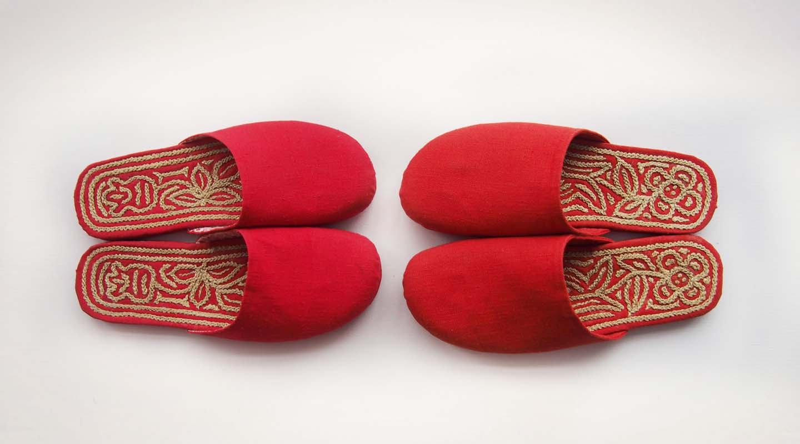

纳礼
项目介绍
「昔酉」品牌致力于传统文化保育。品牌团队共同启动了「千层底麻绳纳绣项目」。通过整合学术调研与设计研发的力量保育此项手工技艺，探讨实践其可持续和多元的发展模式，让再设计促进传统工艺良性的商业运转同时，不仅创造经济收益丰富当地原本单一的产业、激活农村社区，更兼顾文化保育，产生对传统工艺与当代设计有借鉴意义的关系创新。
「昔酉•纳礼」
「昔酉」回到史料记载中第一双纳底布鞋发现地——山西，在这块古老的黄土地上，浸沉了丰富的原始艺术和古代民间技艺，「昔酉」努力找寻这些珍稀的文化遗存、和幸存的原生态老手工艺人，希望他们的古法手作能代际相传淳朴而隽刻的生活哲学。
「昔酉」的出品，在传统工艺改良及再设计基础上，留给当地手工艺人一如往昔的自由创制空间、充分表达他们对生命的理解和对生活的美好愿望。